kookaburraPublic domain · Adrian Pingstone · source

krillCC0 · Sophie Webb/NOAA · source
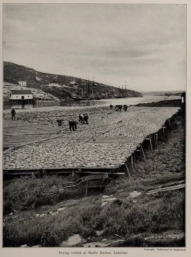
labradorPublic domain · Artemas Ward · source
ladybugCC BY-SA 4.0 · Iamthe.ladybug · source
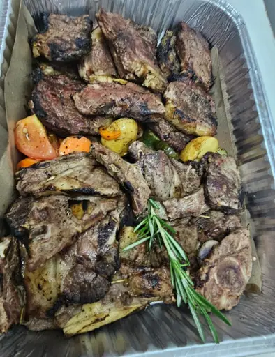
lambCC0 · Captain Shrimp Petaling Jaya · source
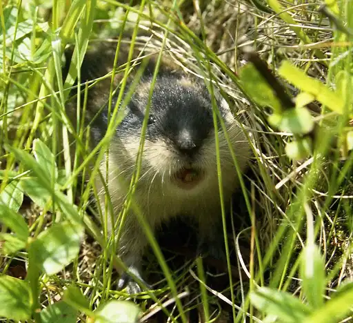
lemmingCC BY 2.5 · unknown · source
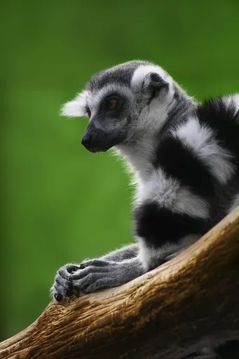
lemurCC BY-SA 2.5 · Richard Bartz, Munich aka Makro Freak · source
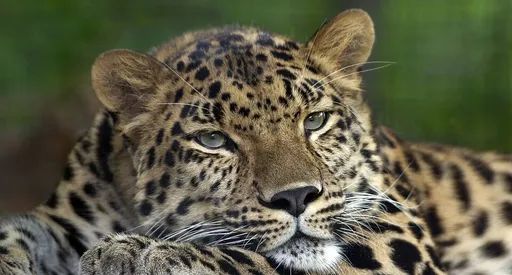
leopardCC BY 2.5 · Colin Hines www.ColinHinesPhotography.com · source
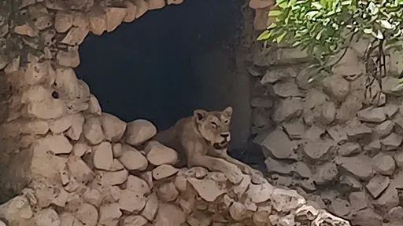
lionCC0 · Captain avestar · source
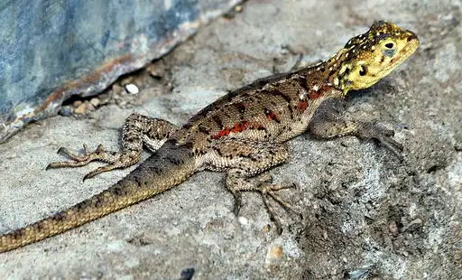
lizardCC BY 3.0 · SajjadF · source
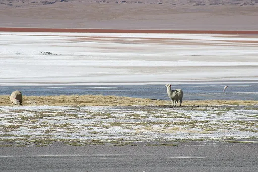
llamaCC BY-SA 4.0 · IanBTravis · source
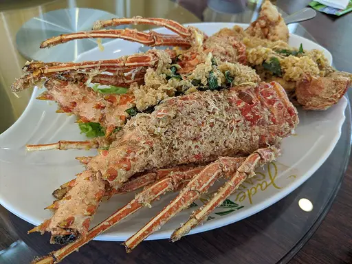
lobsterCC BY-SA 4.0 · Jpatokal · source
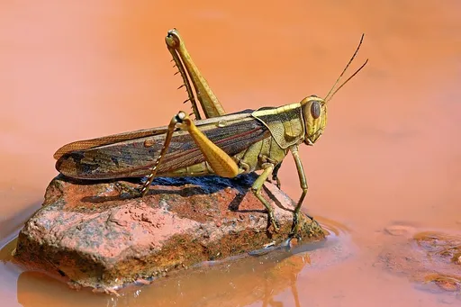
locustCC BY-SA 4.0 · Charles J. Sharp · source
loonCC BY-SA 3.0 · P199 · source
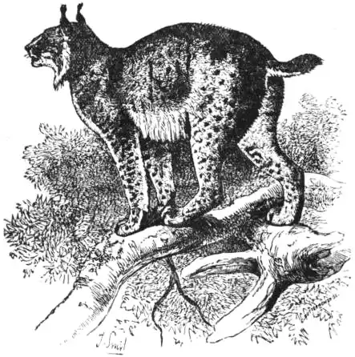
lynxPublic domain · J. Smil · source
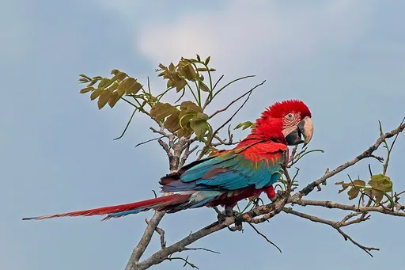
macawCC BY-SA 4.0 · Charles J. Sharp · source
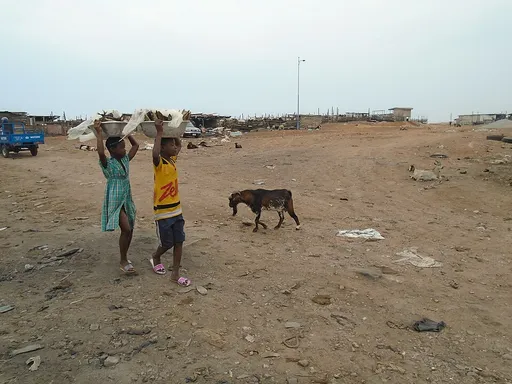
mackerelCC BY-SA 4.0 · Angela L. Rak · source
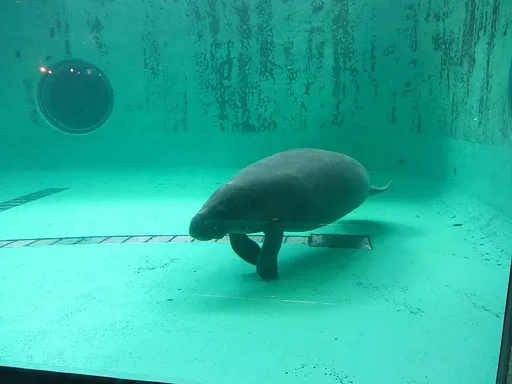
manateeCC0 · Melkov · source
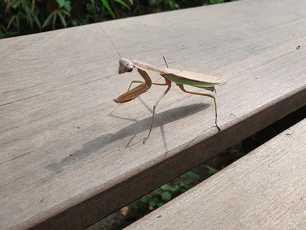
mantisCC0 · Syced · source
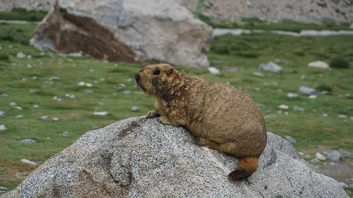
marmotCC0 · S.Mend10 · source